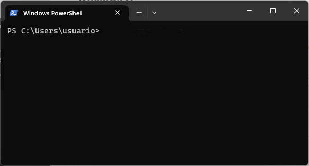
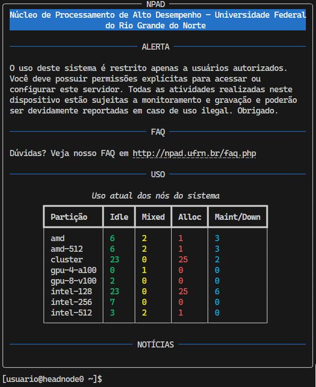

Introdução ao supercomputador - Parte 1¶
O NPAD oferece como solução um acesso a um supercomputador através de um terminal remoto. Para acessar o supercomputador é necessário utilizar um programa chamado ssh. O ssh é uma programa que permite fazer login em uma máquina remotamente. Neste tutorial iremos aprender a gerar uma chave ssh, a acessar o supercomputador e a transferir arquivos para o supercomputador. Caso tenha alguma dúvida durante o tutorial, sinta-se à vontade para entrar em contato conosco através do e-mail atendimento\
Instale os pré-requisitos¶
Como dito anteriormente, acessar o supercomputador requer ssh. O ssh é apenas uma das ferramentas do OpenSSH. A seguir veremos como instalar o ssh em cada sistema operacional:
Windows¶
O Windows 11 já vem com o OpenSSH e, portanto, você pode usar o ssh ou gerar a chave no Windows Terminal. Nos demais Windows, você pode seguir por um desses caminhos:
- Instalar o MobaXterm Home Edition que já vem com OpenSSH
- Instalar o PuTTY que possui o seu próprio cliente ssh
- Instalar OpenSSH e utilizar o Windows PowerShell como terminal
Linux¶
Procure por openssh nos repositórios oficiais. No caso do ubuntu para instalar o openssh é:
sudo apt install openssh-client
Recomendamos utilizar o cliente ssh e terminal oficiais do sistema operacional que estiver utilizando.
Gerando uma chave SSH pública¶
Para criar uma conta no supercomputador, ou caso tenha perdido a chave pública, será necessário inserir uma nova chave pública do tipo rsa. Esta seção mostrará como gerar uma chave pública.
Como gerar a chave pública no Linux¶
Abra o terminal do linux ou aperte Ctrl + Alt + T
Para gerar sua chave ssh do tipo rsa, digite o comando a seguir:
ssh-keygen -t rsa
Irá ser realizado uma sequência de perguntas, apenas pressione enter em todas elas. Para visualizar sua chave pública, digite o comando a seguir:
cat .ssh/id_rsa.pub
Você precisará copiar e colar essa chave pública na hora de criar uma conta ou adicionar outra chave. Com uma chave pública você está pronto para criar uma conta no NPAD. Perceba que você criou uma chave privada em .ssh/id_rsa e uma chave pública .ssh/id_rsa.pub.
Como gerar a chave pública no Windows 11¶
Procure pelo Windows Terminal e abra-o.

Para gerar sua chave ssh do tipo rsa, digite o comando a seguir que irá ser realizado uma sequência de perguntas, apenas pressione enter em todas elas:
ssh-keygen -t rsa
Para visualizar sua chave pública, digite o comando a seguir:
type .ssh\id_rsa.pub
Você precisará copiar e colar essa chave pública na hora de criar uma conta ou adicionar outra chave. Com uma chave pública você está pronto para criar uma conta no NPAD. Perceba que você criou uma chave privada em .ssh\id_rsa e uma chave pública em .ssh\id_rsa.pub.
Vale observar que o Windows usa uma barra invertida para separar as pastas em um caminho (path) para arquivos ou pastas. Enquanto, no Linux usa-se uma barra normal. Por exemplo, se no Windows o caminho é caminho\para\arquivo.txt, no Linux seria caminho/para/arquivo.txt.
Como gerar a chave pública no Windows com MobaXterm¶
Abra o MobaXterm e clique no botão start local terminal
Para gerar sua chave ssh do tipo rsa , e digite o comando a seguir:
ssh-keygen -t rsa
Irá ser realizado uma sequência de perguntas, apenas pressione enter em todas elas. Para visualizar sua chave pública, digite o comando a seguir:
cat .ssh/id_rsa.pub
Você precisará copiar e colar essa chave pública na hora de criar uma conta ou adicionar outra chave. Com uma chave pública você está pronto para criar uma conta no NPAD. Perceba que você criou uma chave privada em .ssh/id_rsa e uma chave pública .ssh/id_rsa.pub.
Como gerar a chave pública no Windows com PuTTy¶
Veja esse tutorial: PuTTy Tutoriais: Gerando um par de chaves publico privada tipo RSA
Criando uma conta no NPAD¶
Para utilizar o supercomputador é necessário criar uma conta na nossa Página de Cadastro. Para realizar o cadastro, verifique qual o seu enquadramento na nossa Política de Acesso para saber qual o Tipo de Usuário da sua conta. Na Página de Primeiros Passos você obterá informações sobre o primeiro acesso. Depois de fazer o cadastro no site do NPAD, você receberá um e-mail confirmando sua inscrição. Após receber o e-mail, você poderá acessar o supercomputador do computador que gerou o par de chaves ssh observando as orientações presentes neste tutorial.
Acessando o supercomputador¶
Uma vez que tenha cadastro no NPAD, você pode acessar o supercomputador de duas formas:
-
Usando a aplicação PuTTy. Caso deseja usar o PuTTy veja o tutorial do PuTTy.
-
através de um terminal como: Windows PowerShell, MobaXterm, usando o comando ssh
Caso deseja usar o ssh, então dentro do terminal digite o comando:
ssh -p4422 nomeDoUsuario@sc2.npad.ufrn.br
substituindo o termo nomeDoUsuario pelo nome de usuário criado. Caso tenha feito tudo corretamente será apresentada a tela inicial do supercomputador:

Aviso: usuários não tem permissão para usar o comando sudo
Sudo significa “super user do” e é um comando para elevar seus privilégios ao poderoso usuário root que tem acesso total a todo o sistema. Por isso, você não tem permissão para usar o sudo. Se precisar fazer algo que necessite do poder de administrador do sistema, entre em contato com o atendimento do NPAD para obter assistência.
Crie uma configuração para ssh¶
Se você criar ou adicionar a seguinte configuração no arquivo ~/.ssh/config:
Host super-pc
HostName sc2.npad.ufrn.br
Port 4422
User nomeDoUsuario
trocando o nomeDoUsuario pelo nome do seu usuário, você poderá acessar o supercomputador usando o comando:
ssh super-pc
Caso você esteja usando MobaXterm, você pode criar uma nova sessão para facilitar o acesso ao supercomputador: MobaXterm tutoriais: criando uma sessão com NPAD
Acessando arquivos do supercomputador¶
O OpenSSH além de permitir fazer login em uma máquina remotamente, também permite a transferência de arquivos por aplicações de linha de comando quanto por software de interface gráfica de terceiros.
Através de uma interface gráfica¶
Em muitos casos é simplesmente mais prático acessar, copiar e mover arquivos do seu computador para o supercomputador através de uma interface gráfica. Para isso você pode utilizar o WinSCP no caso do Windows ou configurar o próprio navegador de arquivos do ubuntu: Gnome Files para essa tarefa. Foi feito dois tutoriais:
-
Copiando Arquivos através de uma Interface gráfica WinSCP (Windows)
-
Copiando Arquivos através de uma Interface gráfica Gnome Files (linux)
Através do terminal¶
É possível transferir arquivos através das aplicações de linhas de comando como: scp e rsync. Sendo o rsync apenas para linux e scp funciona também no Windows 11 pelo Windows Terminal. Nos demais Windows, apenas se você instalar o OpenSSH. Para aprender a usar o scp veja o tutorial: scp e para o rsync veja o tutorial: rsync.